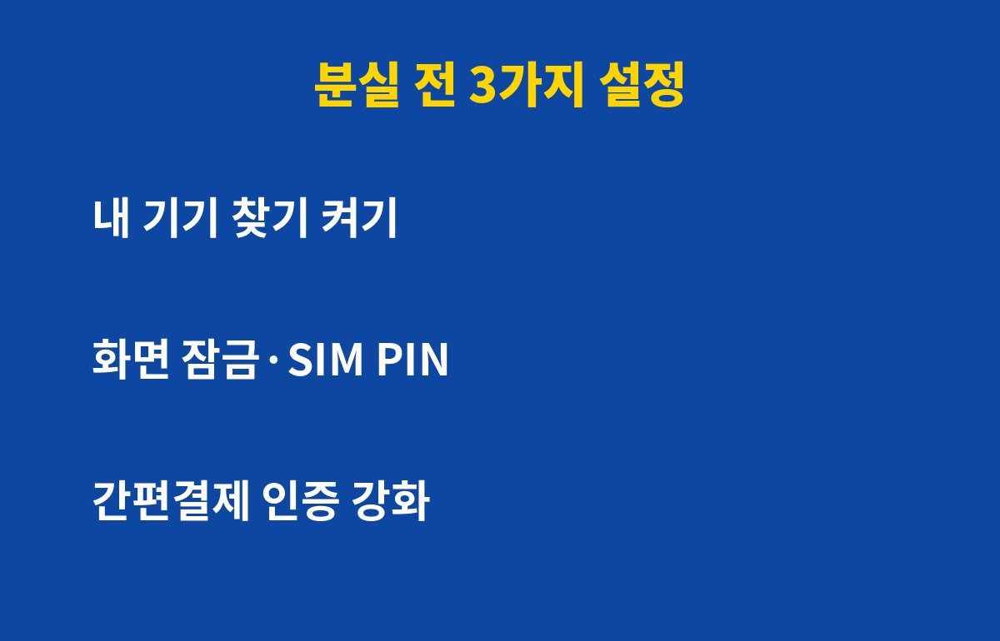

스마트폰 분실에 대비한 핵심 설정은 '내 기기 찾기', '화면 잠금', '간편결제 인증' 딱 3가지이고, 설정하는 데는 3분이면 충분해요. 폰 잃어버린 적 있거나 앞으로 걱정되는 분이라면, 그런데 이 3가지를 켜두고도 오히려 놓치는 게 있을 수 있어요. 이유는 아래에 있어요.
폰을 잃어버리면 기기값보다 무서운 게 그 안에 로그인된 계정들이에요. 카톡, 메일, 은행 앱, 간편결제까지 한 번에 열려 있으니까요. 잠금이 허술하면 습득한 사람이 마음만 먹으면 접근할 수 있어요.
반대로 미리 설정해두면 찾을 가능성도 올라가고, 못 찾더라도 피해를 크게 줄일 수 있어요. 결국 분실 사고는 '잃어버린 뒤'가 아니라 '잃어버리기 전'에 결정돼요.

첫째, 내 기기 찾기. 안드로이드는 구글 '내 기기 찾기', 갤럭시는 삼성 계정 기반 찾기 기능, 아이폰은 '나의 찾기'를 켜두세요. 위치 확인, 소리 울리기, 원격 잠금, 원격 초기화를 쓰려면 미리 켜져 있어야 해요. 폰을 잃어버린 뒤에는 켤 수가 없잖아요.
둘째, 화면 잠금과 SIM 잠금. 패턴보다는 6자리 이상 비밀번호나 생체인식을 추천해요. 알림창에서 메시지 내용이 보이지 않게 하는 설정도 같이 해두면 인증번호 노출을 막을 수 있어요.
셋째, 간편결제 인증 강화. 결제 앱마다 결제 시 별도 인증을 요구하도록 설정하세요. 폰 잠금이 풀려도 한 번 더 막아주는 안전장치가 돼요.
당황하면 순서가 꼬여요. 아래 표대로만 따라 하세요.
| 순서 | 할 일 | 이유 |
|---|---|---|
| 1 | 다른 기기에서 위치 확인·원격 잠금 | 습득자 접근 차단 |
| 2 | 주요 계정 비밀번호 변경·기기 로그아웃 | 계정 탈취 예방 |
| 3 | 통신사에 회선 일시정지 요청 | 소액결제·인증번호 악용 방지 |
| 4 | 은행·카드·간편결제 앱 점검 | 부정 사용 확인 |
| 5 | 경찰·분실물 신고 | 회수 가능성 높이기 |
가장 흔한 함정은 '위치 서비스'와 '인터넷 연결'이 꺼진 경우예요. 폰이 인터넷에 연결되지 않으면 원격 명령이 바로 전달되지 않아요. 그래서 계정 로그아웃과 비밀번호 변경을 병행하는 게 안전해요.
또 하나는 백업이에요. 사진과 연락처가 클라우드에 백업되어 있으면, 폰을 원격 초기화해도 마음이 한결 편해요. 오늘 3분만 투자해서 설정 화면을 열어보세요. 나중에 '그때 해둘걸' 하고 후회하는 일은 없을 거예요.
도움이 됐다면 구독 눌러주시고, 주변에 폰 자주 잃어버리는 분께 공유해주세요.
기사·공식 발표 기준이며 출시·가격 정보는 바뀔 수 있어요.